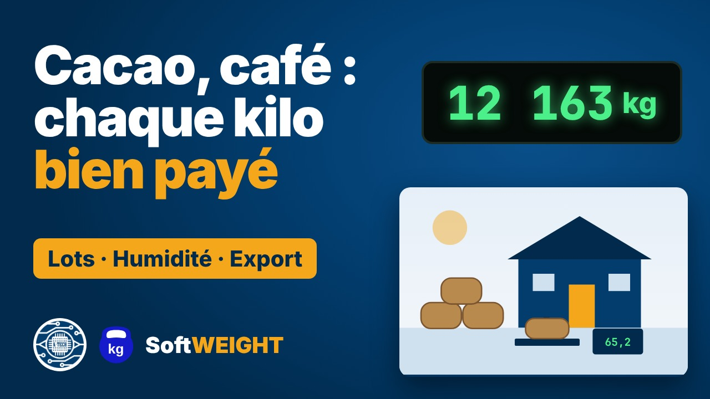
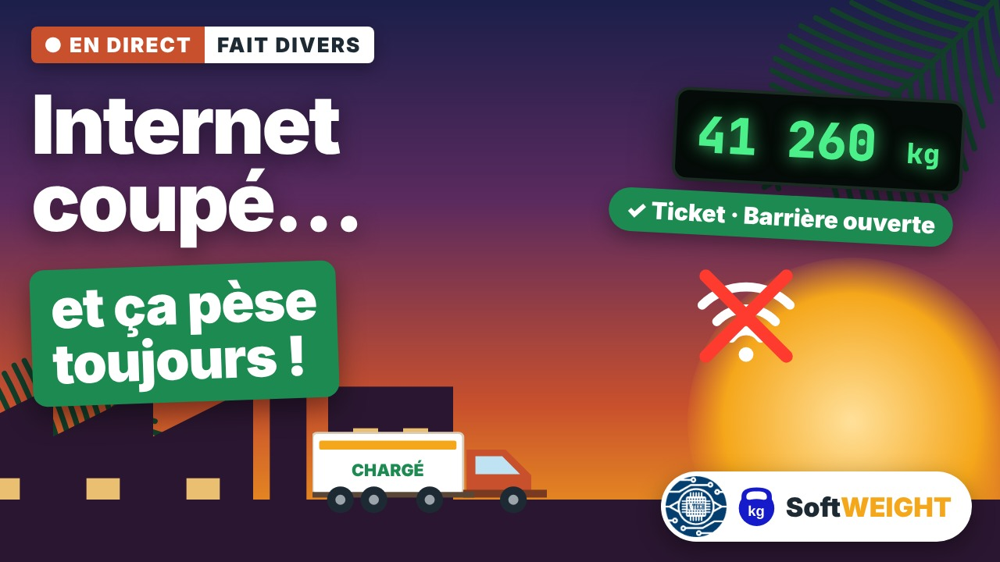

KENJITECH › SoftWEIGHT › Vidéos › Présentation de SoftWEIGHT
Vidéo : SoftWEIGHT, le logiciel de pesage et de traçabilité
Ponts-bascules, ports, usines, petites unités de transformation, grands commerces : partout, le poids, c'est de l'argent. Cette vidéo présente SoftWEIGHT, le logiciel de pesage conçu par KENJITECH à Douala, qui verrouille chaque pesée, la trace de bout en bout et la rend consultable partout, même sans Internet.
Dans cette vidéo
Ce que vous allez voir
- Compatible avec tous les indicateurs de pesage, toutes marques (RS232, RS422, RS485, USB, Bluetooth, Wi-Fi, TCP/IP, Modbus)
- Poids verrouillé, tickets avec QR code de vérification, images des caméras
- Ponts-bascules, pèse-essieux, pèse-palettes, balances, ensacheuses, convoyeurs peseurs
- VGM SOLAS méthodes 1 et 2, pesage par lot, analyses, poids marchand, préfinancements
- Facturation, stock, comptabilité, interface Sage et SAP
- Fonctionne en réseau local sans Internet, avec synchronisation et suivi à distance
Chapitres
Aller directement à…
Texte intégral
Transcription de la vidéo
Introduction
Chaque jour, en Afrique, des millions de tonnes de marchandises sont pesées. Cacao, café, ciment, bois, minerais, conteneurs… Et derrière chaque pesée, il y a de l'argent, des contrats et de la confiance.
Le pesage est partout
Le pesage industriel est partout. Chez les industriels, sur les ponts-bascules des usines, des carrières et des mines. Dans les ports, où chaque conteneur doit avoir un poids vérifié avant d'embarquer. Dans les petites unités de transformation, qui achètent et revendent au kilo. Et dans les grands commerces, où chaque palette qui entre ou qui sort doit être pesée et comptée.
Les problèmes du terrain
Pourtant, sur le terrain, les mêmes problèmes reviennent. Des tickets écrits à la main, faciles à modifier. Des écarts de poids que personne ne sait expliquer. Des données dispersées entre la balance, le cahier et le tableur. Une direction qui ne voit rien dès qu'elle quitte le site. Et des coupures d'Internet qui bloquent le travail.
Les vrais besoins
Ce dont les entreprises ont besoin est simple. Un poids fiable, que personne ne peut trafiquer. Une traçabilité complète de chaque pesée. Et une information disponible partout, à tout moment.
SoftWEIGHT
C'est pour répondre à ces besoins que KENJITECH, à Douala, a conçu SoftWEIGHT. Le logiciel de pesage et de traçabilité, leader en Afrique centrale.
Compatible avec tous les indicateurs
SoftWEIGHT se connecte à tous les indicateurs de pesage du marché, quelle que soit leur marque. En RS232, RS485, USB, Bluetooth, Wi-Fi, TCP/IP ou Modbus. Vous gardez votre matériel existant : pas besoin de le remplacer.
Un poids verrouillé, une pesée tracée
SoftWEIGHT attend la stabilité de l'indicateur, puis verrouille le poids : il ne peut plus être modifié. Chaque pesée garde son produit, son lot, son client, son transporteur, son opérateur, la date et l'heure. Les caméras enregistrent des images à chaque pesée. Et le ticket est imprimé avec un QR code de vérification.
Tous vos équipements
Ponts-bascules, pèse-essieux, pesage ferroviaire, pèse-palettes, balances, ensacheuses, convoyeurs peseurs et bascules de circuit. Tous vos instruments sont réunis dans une seule base de données.
Une réponse pour chaque secteur
Pour les industriels, SoftWEIGHT calcule le poids net automatiquement et pilote les feux, les barrières, les caméras et les automates. Pour les ports et les exportateurs, il établit la masse brute vérifiée des conteneurs, la VGM, selon la convention SOLAS, méthodes 1 et 2. Pour les petites unités de transformation, il gère le pesage par lot, les analyses de laboratoire comme l'humidité, le poids marchand et les préfinancements. Et pour les grands commerces, il relie chaque pesée à la facturation, au stock, à la comptabilité et à vos logiciels de gestion, comme Sage ou SAP.
Même sans Internet
Sur le site, tout fonctionne en réseau local : postes de pesage, de supervision et de consultation. Si Internet coupe, le travail continue normalement. À chaque pesée, les données sont synchronisées vers un serveur en ligne, et tout se rattrape automatiquement au retour de la connexion. Le directeur suit l'activité depuis n'importe où dans le monde, sur ordinateur ou sur téléphone.
Léger, rapide et sécurisé
Développé en C++, SoftWEIGHT est rapide et léger : un ordinateur ordinaire suffit. Les données sont chiffrées, et l'interface reste simple et intuitive, pour les opérateurs comme pour la direction.
SoftWEIGHT en chiffres
Plus de 10 millions de pesées enregistrées. Plus de 100 licences du logiciel SoftWEIGHT distribuées au Cameroun et en Afrique centrale. Et plus de 8 ans en exploitation sur le terrain.
KENJITECH à vos côtés
Chez KENJITECH, nous fournissons et installons le matériel, les cartes et les logiciels, puis nous les intégrons sur vos sites. Nous formons vos équipes et assurons la maintenance, partout en Afrique. SoftWEIGHT : chaque kilo compte, chaque pesée est tracée. Contactez-nous, et rendez-vous sur kenjitech.org.
Autres vidéos
À voir aussi
 2:29Logiciel de pont-basculeCarrières, cimenteries, usines, mines, transporteurs : sur un pont-bascule, chaque tonne pesée est une tonne facturée, ou une tonne perdue.
2:29Logiciel de pont-basculeCarrières, cimenteries, usines, mines, transporteurs : sur un pont-bascule, chaque tonne pesée est une tonne facturée, ou une tonne perdue.
2:13Pesage du cacao et du caféCacao, café, riz, coton, haricot, arachide : du petit producteur à l'exportateur, tout se paie au kilo.
2:13Pesage sans InternetMardi soir, 19 h, une usine au Cameroun : Internet coupe devant une file de camions. 1:51Démonstration du logicielSoftWEIGHT en conditions réelles, écran par écran : une pesée de camion sur pont-bascule, puis un lot de sacs, de l'arrivée jusqu'aux rapports, au stock et à la facturation.
1:51Démonstration du logicielSoftWEIGHT en conditions réelles, écran par écran : une pesée de camion sur pont-bascule, puis un lot de sacs, de l'arrivée jusqu'aux rapports, au stock et à la facturation.Contact
Demandez votre démonstration
Décrivez votre site : nous revenons vers vous avec une démonstration et la version de SoftWEIGHT adaptée à votre installation.